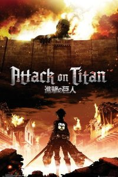

Attack on Titan
The walls protect the last of humanity from the titans, unintelligent giants who devour humans for fun. Eren Yaeger with his foster sister, Mikasa Ackerman, witness the unthinkable when a titan breeches the wall of their district. Many horrific acts follow including the duo watching their mother being eaten alive. "That Day" is when everything changed; Eren makes a pledge to eradicate the titans and avenge all the victims.